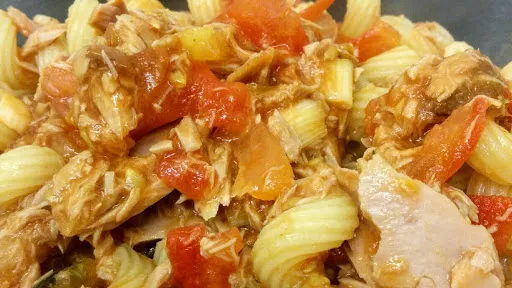

Olive & tuna pasta

Tuna can be a really handy staple to make less expensive dishes. Be careful not to stir too much after the tuna is added, otherwise it will be a bit mushy. Gluten-free: use gluten-free pasta and stock cube.
Servings: 4
Total: 20 mins
Ingredients
x0.5
x1
x2
x3
2 1 6 1 4 2 ¼ 1 20 2 6 2
Instructions
Cook the pasta2 mugs
, drain and return to the pan.
Meanwhile, heat the oil1 tbsp
in a wok or large frying pan. Fry the onions6
, garlic1 clove
and tomatoes4 large
until they begin to soften.
Add the tomato puree2 tbsp
, water¼ mug
and stock cube1
. Season well and simmer for 2 minutes.
Add the olives20
, basil2 tbsp
, anchovies6
and flaked tuna2 x 185 g tins
along with the cooked pasta2 mugs
. Heat for 1 minute.
Nosh: Quick & Easy
Short Link
Long Link

 Gluten Free
Gluten Free